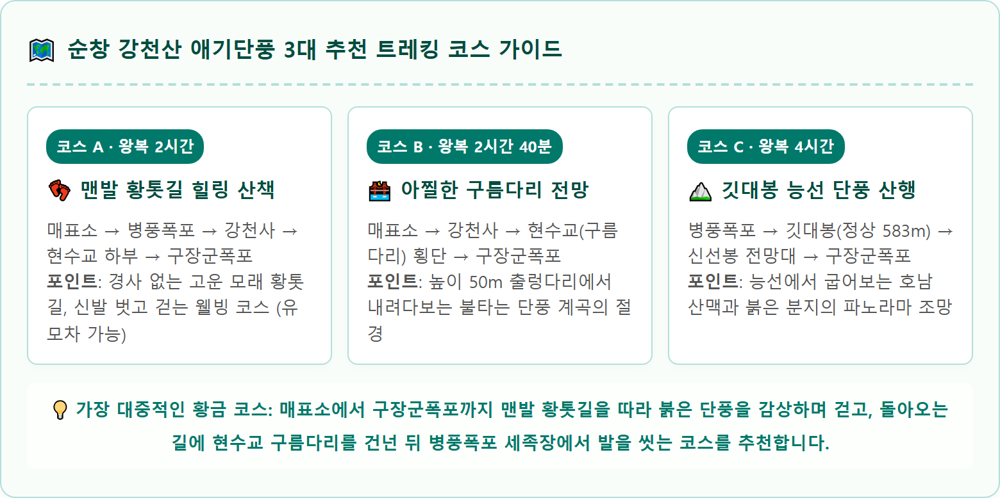

순창 강천산 계곡을 따라 붉게 물든 애기단풍과 시원한 병풍폭포 전경 / AI 제작 이미지
전북 순창군 팔덕면과 전남 담양군의 경계에 솟아 있는 강천산(583m)은 규모는 아담하지만 깊은 계곡과 기암괴석, 수려한 폭포가 어우러져 '호남의 소금강'이라는 찬사를 받아온 명산입니다.
1981년 1월 7일 국내 최초로 군립공원으로 지정된 강천산의 진정한 주인공은 가을철 산 전체를 불태우듯 붉게 물들이는 애기단풍(당단풍나무)입니다.
일반 단풍잎보다 잎이 작고 앙증맞으며 잎 가장자리가 9~11갈래로 섬세하게 갈라져 있는 애기단풍은 일교차가 크고 기암절벽 사이로 흐르는 청정 계곡의 습도를 머금어 다른 지역의 단풍보다 색상이 유난히 맑고 투명한 진홍빛을 자랑합니다.
강천산 애기단풍은 10월 중순부터 점차 색을 바꾸기 시작하여, 10월 25일부터 11월 10일경에 2.7km 계곡 전체가 화려한 불꽃 터널을 이루며 절정의 장관을 이룹니다.
강천산 군립공원은 순창군 조례에 따라 입장료를 징수하고 있으나, 납부한 금액의 상당 부분을 지역화폐로 즉시 돌려주는 실속형 페이백 제도를 운영하고 있습니다.
| 구분 | 입장 요금 | 순창사랑상품권 환급액 | 실제 체감 비용 및 비고 |
|---|---|---|---|
| 성인 (개인) | 5,000원 | 2,000원 즉시 환급 | 실부담 3,000원 (매표소 발권 시 상품권 지류 수령) |
| 성인 (단체 30인 이상) | 4,500원 | 2,000원 환급 | 실부담 2,500원 |
| 학생 / 청소년 (초·중·고) | 3,000원 | 환급 없음 | 만 7세 이상 ~ 만 18세 이하 청소년 |
| 무료 입장 대상 | 무료 (0원) | 해당 없음 | 순창군민, 만 65세 이상 경로, 만 6세 이하 미취학 아동, 장애인, 국가유공자 (신분증 제시 필수) |
강천산 군립공원은 방문객의 편의를 위해 대규모 공영주차장을 무료로 개방하고 있습니다. 하지만 단풍 성수기 주말에는 진입 도로에 차량이 길게 늘어서므로 주차장 배치를 미리 파악해야 합니다.
| 주차장 명칭 | 매표소까지 거리 | 주차 면수 및 환경 | 추천 대상 및 진입 전략 |
|---|---|---|---|
| 제1주차장 ★ 매표소 최인접 |
도보 약 3~5분 | 약 350면 아스팔트 포장 |
가장 먼저 만차 (주말 오전 08:30 이전 권장). 상가 단지 및 매표소 바로 앞 |
| 제2주차장 중간 주차장 |
도보 약 10~12분 | 약 500면 평탄 포장 |
제1주차장 만차 시 유도됨. 하천변 데크 산책로를 따라 기분 좋게 걸어 이동 가능 |
| 제3주차장 (임시) 대형 버스/승용차 |
도보 약 20분 (셔틀버스 탄력 운행) |
약 1,000면 이상 광활한 공터 |
단풍 피크 시즌 주말 오전 10시 이후 도착 차량. 셔틀버스 탑승 권장 |

강천산 계곡길의 가장 독보적인 장점은 국내 최초의 왕복 5km 맨발 산책로가 조성되어 있다는 점입니다.
매표소를 지나 병풍폭포부터 종점인 구장군폭포까지 이어지는 2.7km 길은 아스팔트나 시멘트가 아닌, 미세한 황토와 고운 마사토를 곱게 다져 놓았습니다. 돌멩이나 유리 파편이 완벽히 정비되어 있어 신발과 양말을 벗고 맨발로 걸어도 발바닥에 부드러운 감촉만 전해집니다.
촉촉한 흙의 기운을 느끼며 발바닥 지압 효과를 누릴 수 있으며, 길 중간중간과 병풍폭포 입구에 시원한 계곡 지하수로 발을 씻을 수 있는 세족장과 먼지털이기(에어건)가 완벽하게 구비되어 있습니다. 개인 수건 한 장만 챙기면 완벽한 힐링을 누릴 수 있습니다.
강천산 산책로 중간 지점, 천년고찰 강천사를 지나 5분 정도 걸어 올라가면 머리 위 기암절벽 사이에 허공에 걸려 있는 붉은 현수교를 마주하게 됩니다.
1989년 설치된 강천산 현수교(구름다리)는 지상 50m 높이에 길이 78m, 폭 1m로 건설된 국내 산악 현수교의 효시입니다.
산책로에서 가파른 목재 계단을 약 3~5분 정도 오르면 구름다리 진입로에 닿습니다. 다리 위에 발을 내딛으면 발아래로 울창한 애기단풍 숲과 깊은 계곡이 아찔하게 내려다보이며, 바람이 불 때마다 전해지는 미세한 흔들림이 짜릿한 스릴을 더합니다. 붉은 단풍 바다 위에 둥둥 떠 있는 듯한 인생 사진을 남길 수 있는 최고의 핫플레이스입니다.
병풍폭포를 지나 황톳길을 따라 걷다 보면 단아한 한옥 누각과 대웅전이 고즈넉하게 자리 잡은 천년고찰 강천사(剛泉寺)가 모습을 드러냅니다.
신라 진성여왕 원년(887년) 도선국사가 창건한 사찰로, 한때 1,000여 명의 승려가 머물렀던 거찰이었으나 임진왜란과 6·25 전쟁을 겪으며 소실되었다가 중건되었습니다.
강천사 마당에는 전라북도 기념물로 지정된 수령 300년이 넘은 모과나무가 당당한 자태를 뽐내고 있으며, 대웅전 앞 오층석탑(전북 유형문화유산)의 단아한 기품이 주변 붉은 애기단풍과 어우러져 한 폭의 진경산수화를 완성합니다.
강천산 계곡 산책로에는 트레킹의 시작과 끝을 알리는 두 개의 웅장한 폭포가 장관을 연출합니다.
• 병풍폭포 (입구에서 5분): 매표소를 지나자마자 나타나는 높이 40m, 폭 15m의 웅장한 폭포입니다. 병풍처럼 펼쳐진 바위벽을 타고 떨어지는 시원한 물줄기가 햇살을 받아 영롱한 무지개를 만들어냅니다. 폭포 밑을 지날 때 물안개가 피어오르며 음이온을 듬뿍 선사합니다.
• 구장군폭포 (산책로 종점): 마사토 산책로의 끝에 위치한 높이 120m의 거대한 3단 폭포입니다. 옛날 마한 시대 아홉 명의 장수가 전쟁에서 패한 뒤 이곳에 모여 자결하려다 다시 전장으로 나가 승리를 거두었다는 비장한 설화가 전해집니다. 폭포 주변에 조성된 수변 테마공원과 정자 쉼터는 하산 전 도시락을 먹거나 휴식을 취하기에 최고의 장소입니다.
강천산 단풍 트레킹을 마치고 돌아가는 길목에는 순창만의 깊은 손맛을 느낄 수 있는 미식 명소들이 가득합니다.
• 순창 전통고추장 민속마을: 강천산에서 차로 약 10분 거리(순창읍 백산리)에 위치한 한옥 마을로, 수십 가구의 전통 장류 명인들이 즐비하게 늘어서 있습니다. 집집마다 마당 가득 늘어선 장독대 풍경이 이색적이며, 입장료 환급으로 받은 순창사랑상품권으로 정통 찹쌀고추장, 된장, 더덕장아찌, 감장아찌를 시식하고 구매할 수 있습니다.
• 순창 순대국밥 & 순대골목: 순창 전통시장 안쪽에 형성된 피순대 골목은 전국적으로 유명합니다. 선지와 채소를 듬뿍 넣어 쫄깃하고 구수한 순대국밥과 암뽕순대는 쌀쌀해진 가을 날씨에 얼어붙은 몸을 든든하게 녹여줍니다.
• 섬진강 메기매운탕 & 참게탕: 유등면 섬진강변을 따라 형성된 매운탕 맛집들은 민물참게의 시원한 국물과 두툼한 메깃살, 구수한 시래기가 어우러져 남도 보양식의 진수를 보여줍니다.
수도권 및 광주·전남권에서 당일치기로 순창 강천산을 가장 알차게 둘러볼 수 있는 추천 일정표입니다.